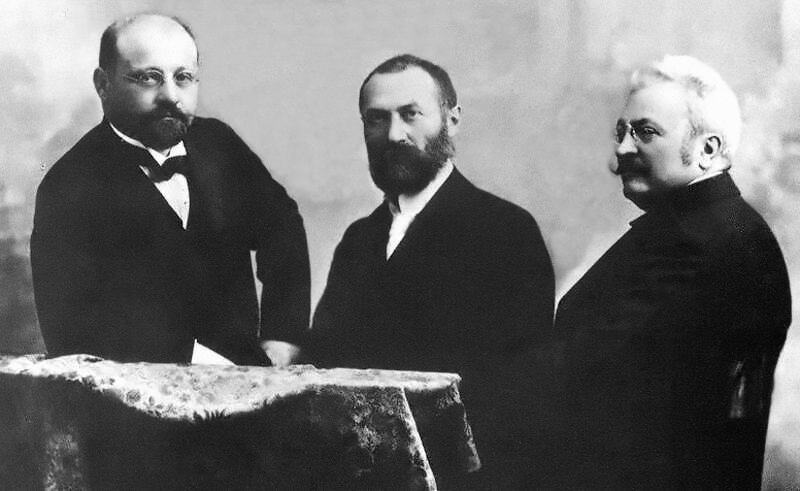

Chapter 2
Transformers
Before we continue on with electric drives, it is worthwhile to discuss particular aspects of the theory of
magnetically-coupled circuits, with a special emphasis on the
-
electric generation at the most economical generator voltage,
-
power transfer at the most economical transmission voltage, and
-
power utilization at the most suitable voltage,
for the particular utilisation device. The transformer is also widely used in low-power, low-current electronic and control circuits for performing such functions as:
-
matching the impedances of a source and its load for maximum power transfer,
-
isolating one circuit from another, or
-
isolating direct current while maintaining ac continuity between two circuits.
The transformer is one of the simpler devices made from two ( 
2.1.1 An Overview of Transformers
2.2 A Mathematical Model of the Transformer
2.2.1 Transformers under No-Load Conditions
2.2.2 The Effect of Secondary Current on an Ideal Transformer
2.2.3 Reactances and Types of Equivalent Circuits
2.3 Understanding Transformer Behaviour
2.3.1 Short-Circuit Test
2.3.2 Open-Circuit Test
2.4 Transformers in the Wild
2.4.1 Auto and Multiwinding Transformers
2.4.2 Poly-Phase Transformers
2.4.3 Voltage and Current Transformers